Espeleólogos
Para registrar cavidades, paneles, posibles marcas y restos de pigmento durante exploraciones, revisiones de campo o trabajos de documentación.
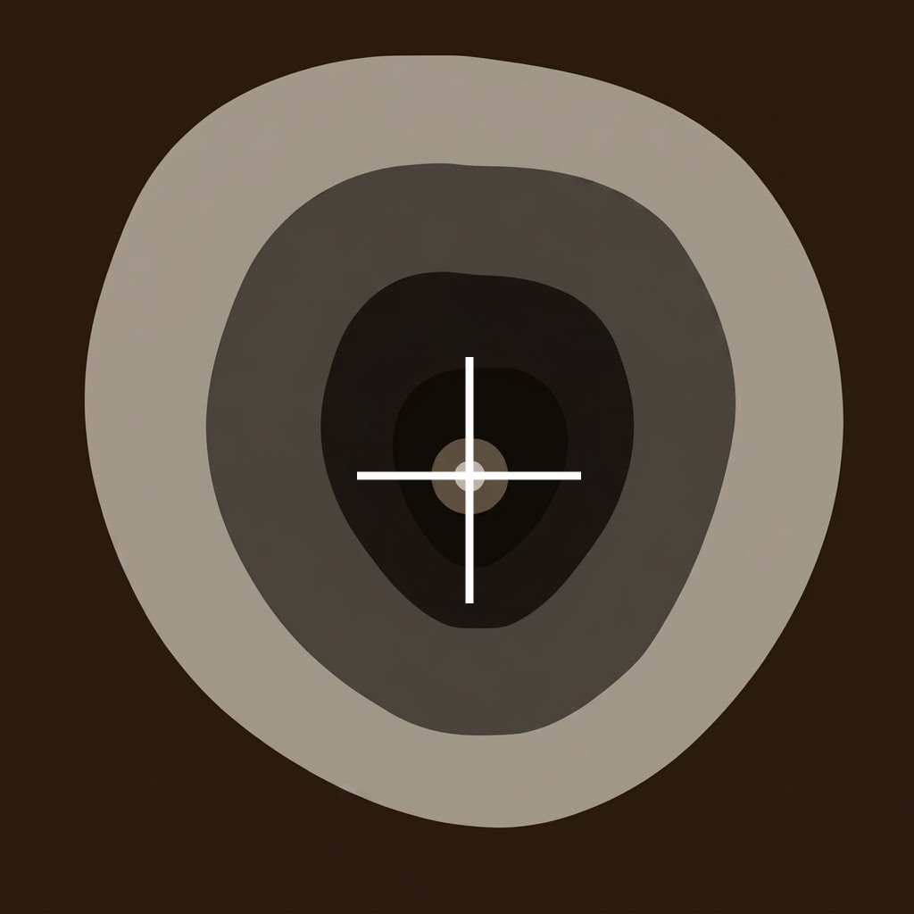
documentación visual rupestre
Rupestra transforma la fotografía de campo en una herramienta de análisis y documentación, ayudando a detectar y resaltar posibles pigmentos rupestres mediante análisis cromático avanzado y procesamiento digital de imagen.
Nacida desde un equipo multidisciplinar vinculado a la conservación de cavidades, combina experiencia en espeleología, arqueología, geología e ingeniería de software para apoyar la observación, el registro y la generación de informes en cuevas, abrigos y entornos rupestres.
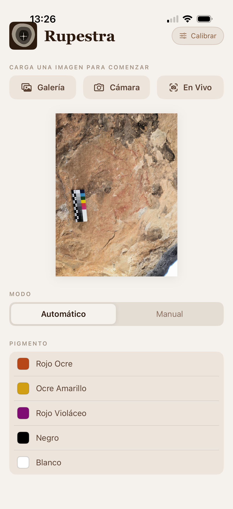
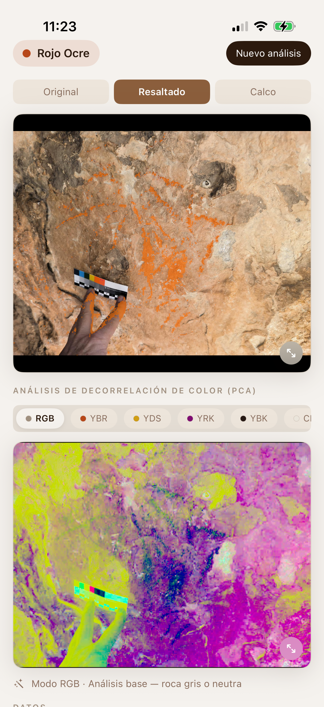
¿Qué es Rupestra?
Rupestra es una aplicación de apoyo a la documentación de arte rupestre que combina análisis cromático avanzado, procesamiento digital de imagen y herramientas de registro diseñadas para el trabajo de campo.
La app permite fotografiar una superficie, seleccionar un tipo de pigmento, analizar la imagen y generar un informe técnico con imágenes de análisis, coordenadas GPS, metadatos de cámara y notas de campo.
Su sistema combina dos líneas de análisis visual: detección por espacio de color HSV, orientada a identificar y aislar pigmentos específicos, y decorrelación estadística de color mediante PCA, pensada para realzar trazos degradados, débiles o difíciles de apreciar a simple vista.
Para quién está pensada
Para registrar cavidades, paneles, posibles marcas y restos de pigmento durante exploraciones, revisiones de campo o trabajos de documentación.
Como herramienta de apoyo visual para observar, contrastar y preparar documentación gráfica de superficies rupestres.
Para generar informes visuales con imágenes de análisis, notas de campo, metadatos técnicos y localización del contexto.
Para apoyar tareas de observación, seguimiento y registro, siempre desde el respeto al patrimonio y sin sustituir el criterio experto.
Cómo funciona
Rupestra organiza el análisis en pasos claros para acompañar el trabajo real en cavidades: desde una primera observación visual hasta la generación de documentación técnica útil para el análisis posterior.
Fotografía la superficie en campo o selecciona una imagen existente para iniciar el análisis.
Elige entre pigmentos predefinidos o toma una muestra manual directamente sobre la imagen mediante el cuentagotas.
Corrige dominantes de color, calibra la detección o aplica realce cromático avanzado para observar trazos débiles o poco perceptibles.
Guarda imágenes comparables -original, resaltado, calco y realce cromático- junto con coordenadas GPS, metadatos de cámara y notas de campo en un
Modo diferencial
El modo En Vivo transforma el móvil en una herramienta de observación en tiempo real. Al mover la cámara sobre paredes, techos o superficies rupestres, Rupestra resalta las zonas compatibles con el pigmento seleccionado y neutraliza el resto de la imagen en una escala gris.
Así es posible recorrer visualmente una cavidad o abrigo antes de tomar la fotografía definitiva, detectando indicios, contrastes o zonas de interés que podrían pasar desapercibidas a simple vista.
Una forma rápida de decidir dónde observar con más detalle, qué fotografiar y qué documentar posteriormente.
Observación aumentada antes de la captura definitiva.
El escaneo en vivo no sustituye el análisis experto, pero permite una primera inspección visual rápida: los posibles pigmentos se destacan en color mientras la roca queda en tono neutro.
Por qué Rupestra
El proyecto surge de la experiencia directa en exploración, observación y documentación de superficies rocosas, dentro de un contexto de conservación de cavidades y trabajo de campo.
Las condiciones reales marcan el diseño de la app: poca luz, accesos complejos, superficies irregulares, necesidad de registrar contexto, revisar indicios con cuidado y generar documentación útil para su análisis posterior.
Rupestra está pensada para acompañar ese proceso: observar mejor, registrar con más precisión y facilitar la creación de informes claros, trazables y útiles para equipos de documentación.

Galería
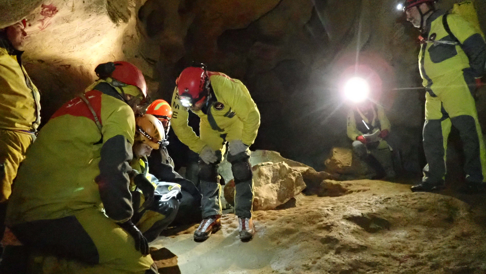
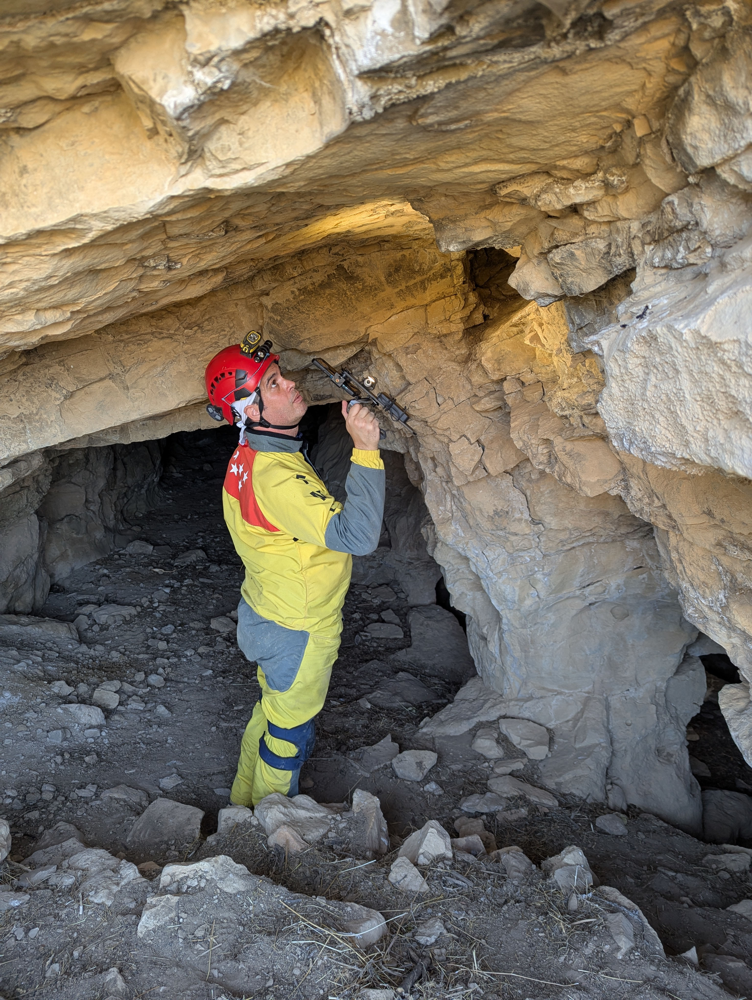

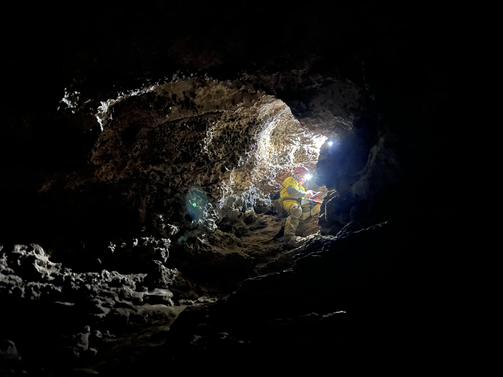

.JPG)
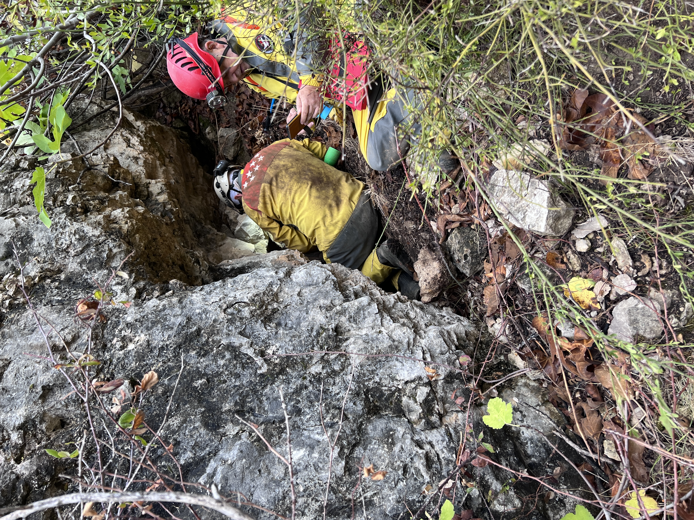
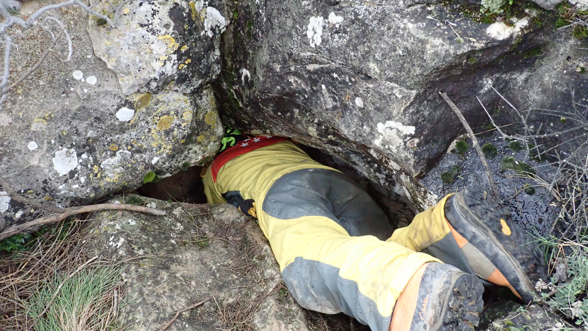

.jpg)

.JPG)
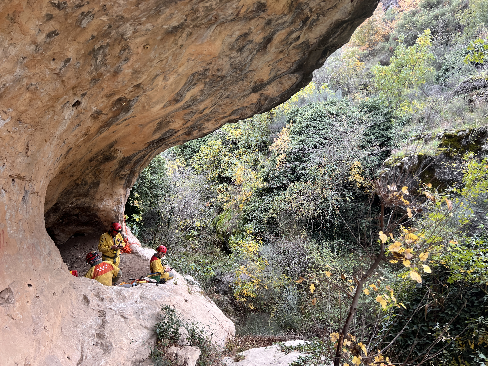
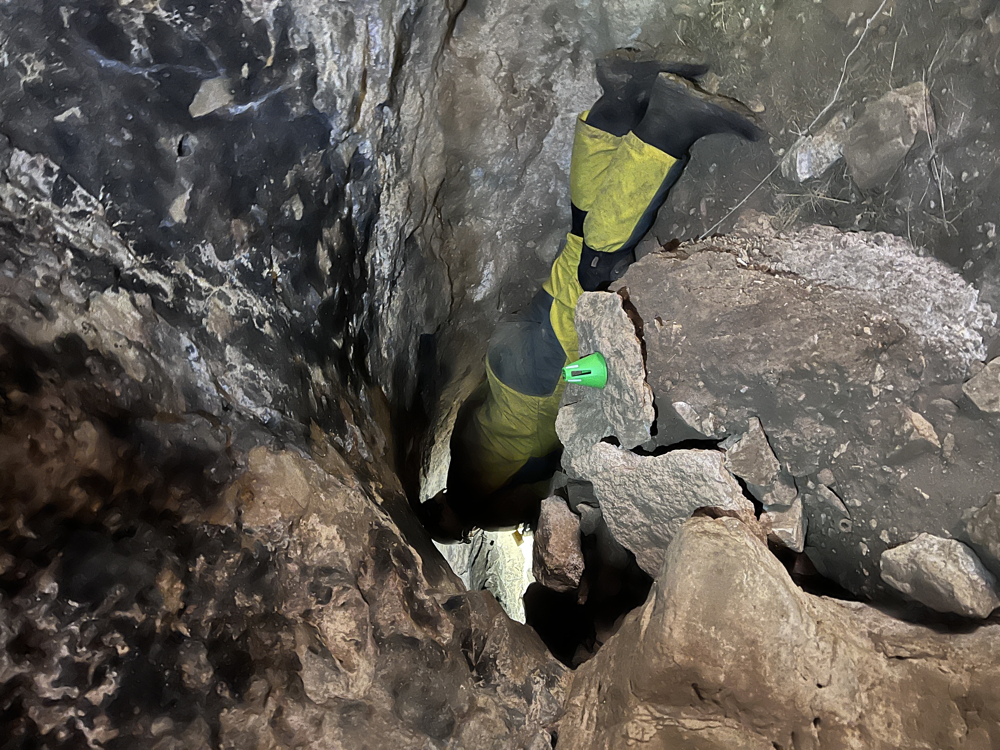
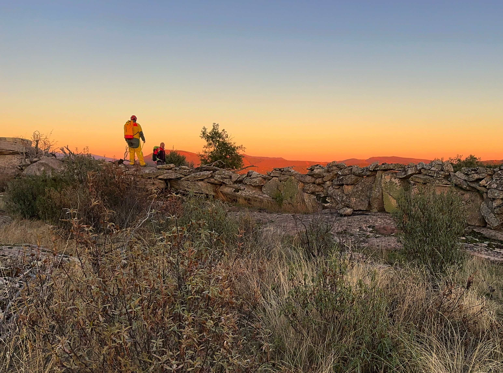
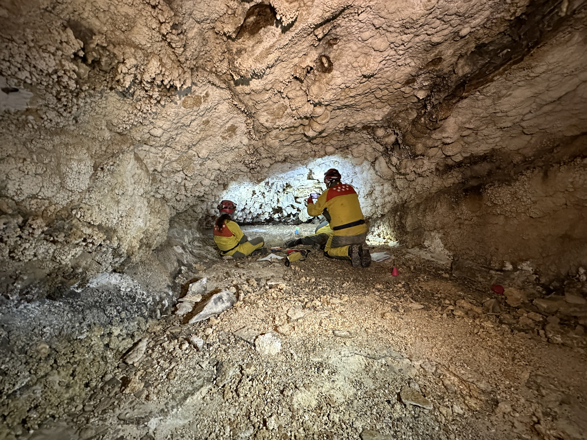

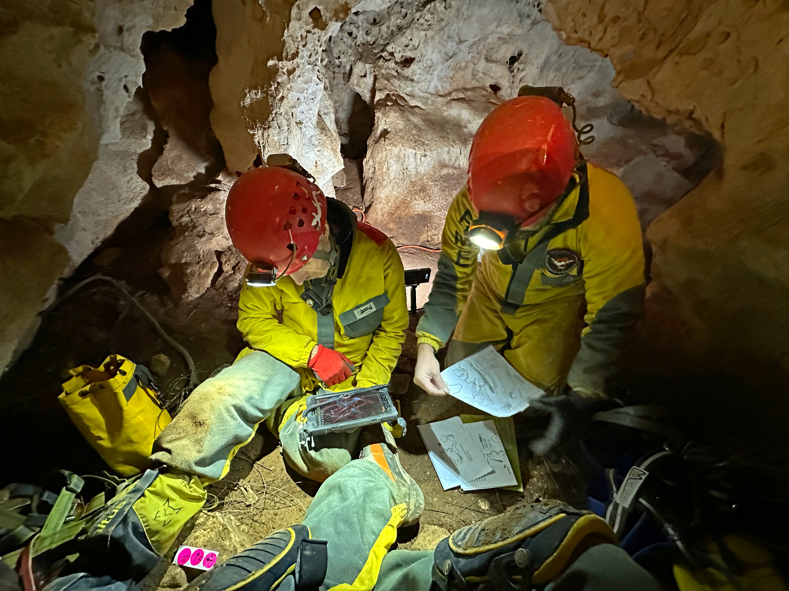
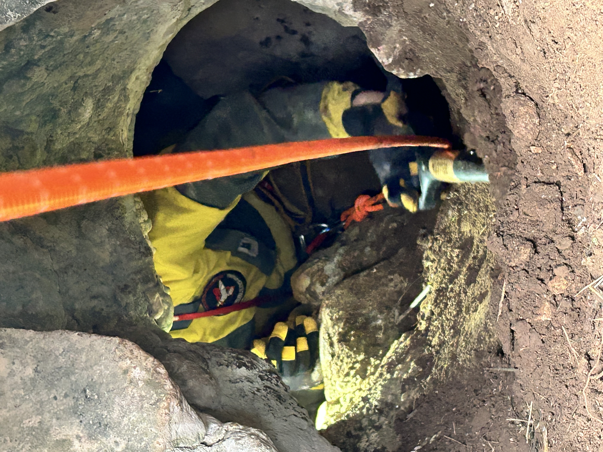
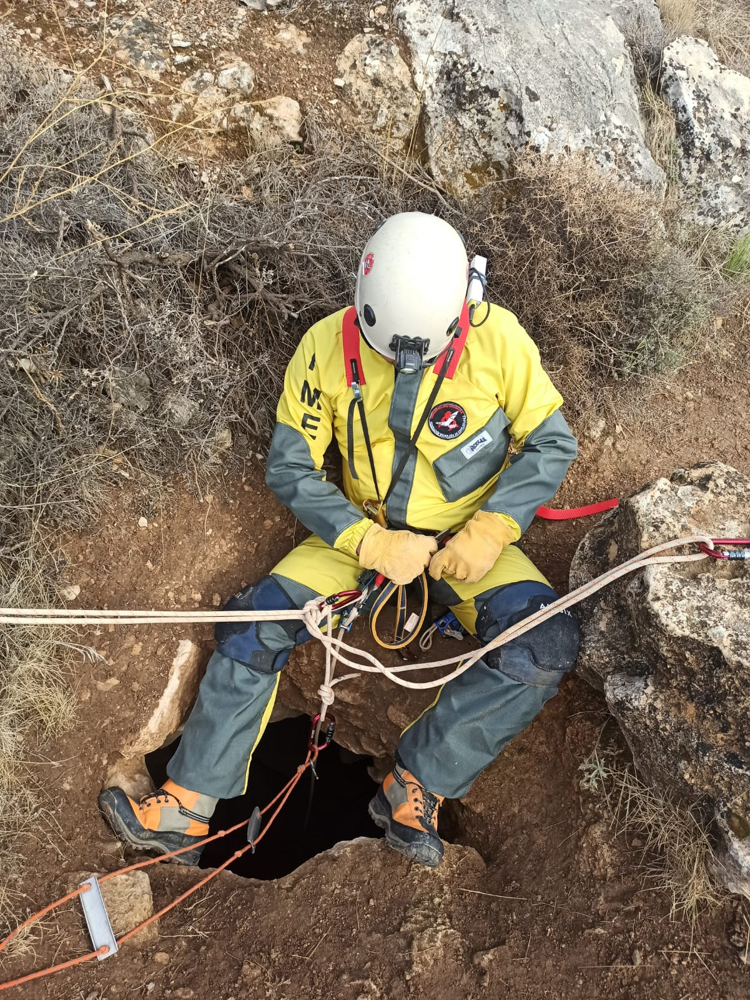
Agradecimientos

Rupestra no nace de una idea aislada, sino de muchas salidas, observaciones, conversaciones y necesidades compartidas en campo.
Gracias a los miembros de la Comisión de Conservación de Cavidades de la Comunidad de Madrid por su trabajo, criterio y compromiso con la documentación y conservación del patrimonio subterráneo.
Nombre Apellido · Nombre Apellido · Nombre Apellido · Nombre Apellido